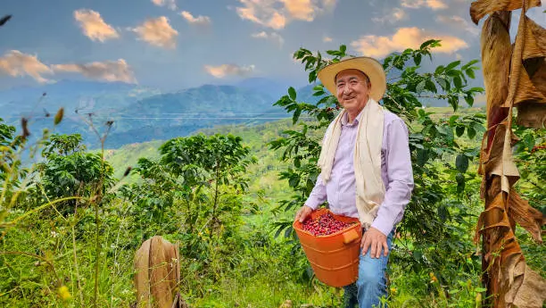
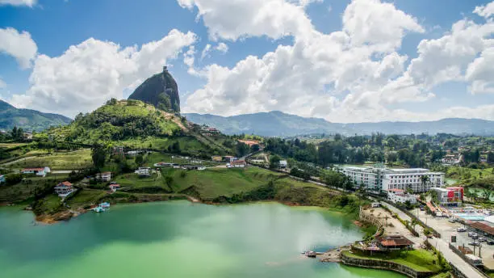

Data
- Area: 1,141,748 km²
- Population: 51,874,024
- Capital: Bogotá
- Languages: Spanish
- Currency: Colombian Peso
- Time Zone: UTC-5
- Calling Code: +57
- Internet TLD: .co


Weather
- Temperature: 10 °C
- Conditions: Partly Cloudy
- Wind: 5 km/h
- Wind Chill: N/A